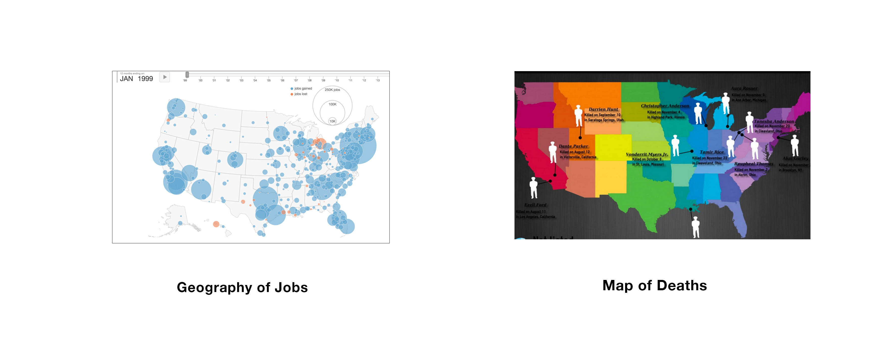
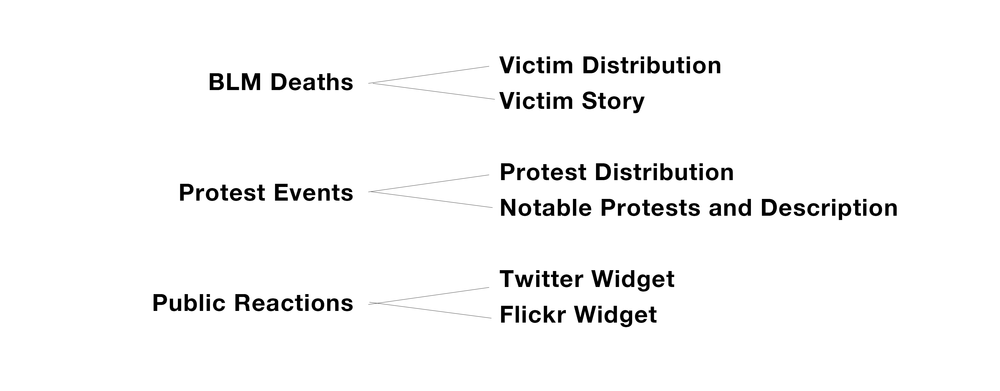
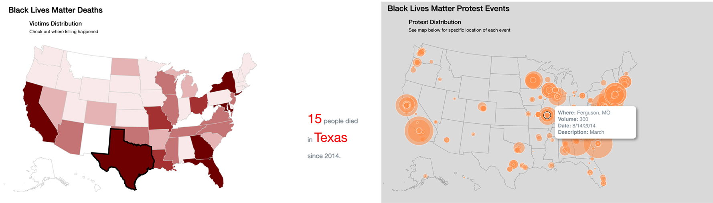
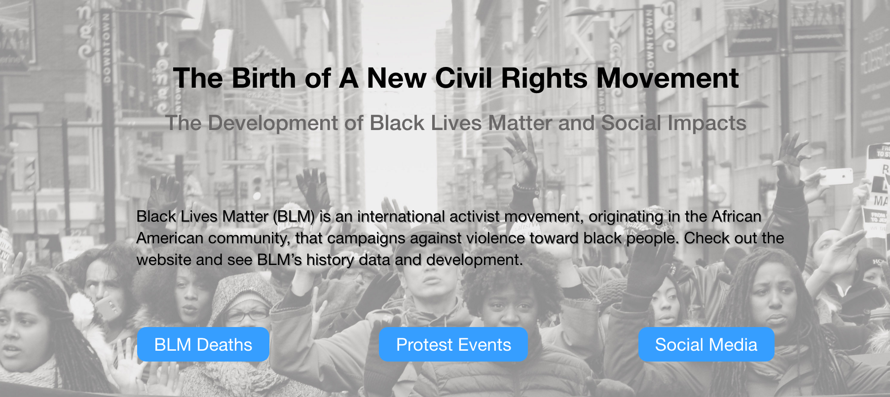

The Birth of a New Civil Rights Movement
Website Design | Information Aggregation
The Birth of a New Civil Rights Movement is an individual information aggregation project that I finished in class LMC 6313 at Gatech, where I collected multiple sources of data around Black Lives Matter and reorganized them into a more aggregated and engaging format.
Goal
After the death of Michael Brown and Eric Garner in 2014, Black Lives Matter movement happened across the United States. The purpose of this project is to increase more social awareness for people of color who got killed because of police brutality. Meanwhile, I would also like to offer a comprehensive view of Black Lives Matter so that helps with the people who care about.
Design process
Brainstorm and Survey
After making up my mind of creating a website for Black Lives Matter, I started thinking about a question: what information do people care most around Black Lives Matter? I went out to my friends for answers. According to what they told me, I decided to cover three aspects of Black Lives Matter:
- a) people of color who got shot dead by police since Michael Brown,
- b) BLM movements and protests,
- c) public reactions to both deaths and protests.
Similar Products
I did research on similar products relating to each aspect of Black Lives Matter and figured out their cons and pros. This time, I didn’t search for the exactly same website because I am doing an information aggregation, so I was just looking for how people are solving problems for each aspect.
Geography of Jobs is an animated map illustrating job changes over the years. The larger bubble on the map represents more job changes and vice versa. I thought this is a good way for me to show both locations and the size of each protest events.
Meanwhile, I also found other interesting projects using different colors to represent the extent of particular situations, which inspired me of highlighting the number of people dead in each state by coloring each of them.
Structure Design
At the early survey stage, I found three mains aspects to be covered in the project. I began to think about how to organize them and who should come first. My approach was based on the basic connections between each of them. I put the deaths of black people in the first place because compared to the other two, deaths like Michael Brown resulted in the protests, so it should be coming first. In this part, I decided to have two things covered. One is an interactive map showing the number of people dead since the death of Michael Brown in 2014. The other one shows the stories and information of each victim.

Then I put protest events in the second place followed by the social media section, which makes sense because people react to events after they happened. In protest events part, it also has two sections. The first one is a bubble map showing the density and the size of these events. Through that, I would like to enable viewers to find out something meaningful like “which state/part of United States is an event-heavy part?” The other shows the notable events in each month on a timeline, which I thought is a good perspective for viewers to learn about how things are going.
In terms of the public reaction part, I decided to implement two social media widgets to fully display what people are expressing online. So I included Twitter for thoughts in text format and Flickr for images.
Specifics
Map Visualization of Distribution: I made two interactive maps in this project using D3 from scratch. I took map data from U.S. Census Bureau, and colored each state. Then I added bubbles onto the map. The bubbles are interactive that when viewers hover over it, it shows information of it.

Layout Arrangement: I chose to display information in one page format with three big sections. I had a landing page at first allowing viewers to choose their own adventure. Also viewers are able to view the entire page just by scrolling down.
Coding Language: I coded the project from scratch using basic coding language like HTML, CSS, Javascript/JQuery. Special libraries apply including D3 and Bootstrap.
Iteration
User Testing and Feedback
After finishing the draft version of website, I did user testing on it. I brought my project to class and asked for feedbacks from my classmates. First, I had them play through my website and think aloud without any instruction or hint. I observed the process and collected data while they were playing. Based on my observation, I found out that they were a bit lost due to the lack of necessary context. After that, I talked with them and explained what my project is. They once again suggested me to include more context so that helps with making more sense of the visualization.
Improvement
I made some modifications based on feedbacks collected from user testing. The biggest one was adding one paragraph for each visualization so that explains what I am doing to the viewers for better understanding. In addition, I also modified the pop up text to be more contextualized for the same purpose. Other modifications involve color color palette picking, icon designing, etc.

Future Works
Integrated timeline with map
One minor problem in this project is with the timeline and map. I hope I could connect timeline with map by either putting all events on timeline or incorporating timeline function with map. Either way, it will give more agency to viewers.
Responsive page
Due to the lack of knowledge of D3, the interactive map is not responsive as well as some other contents like timeline. I will try to figure them out in future works.